地政学
リーブルヴィルは中部アフリカの大西洋岸で、石油、森林、港湾、外交をまとめる首都です。旧フランス圏の制度、地域安全保障、ギニア湾の海上交通、政変後の国家再編が、河口の官庁街へ集まります。政治の近さを見ます。
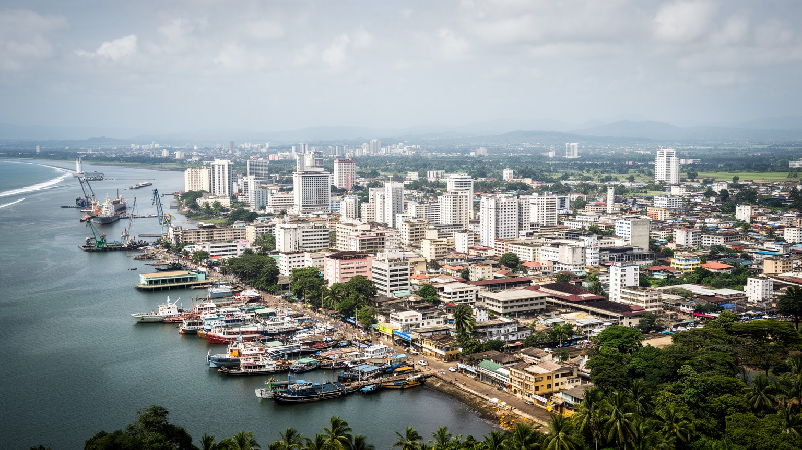
🇬🇦 ガボン / エスチュエール州 / World City Atlas
ギニア湾に開くガボンの首都です。河口の港、官庁街、海岸道路、石油国家の政治、木材と物流、教会とモスク、市場、住宅地、熱帯雨林の国の玄関が一つの都市圏に重なります。
都市の骨格
リーブルヴィルは、ガボン河口の海岸に沿って行政、港湾、空港、住宅、商業が伸びる首都です。内陸の森林、石油収入、国際外交、日々の通勤と市場が、海に面した道路へ集まります。
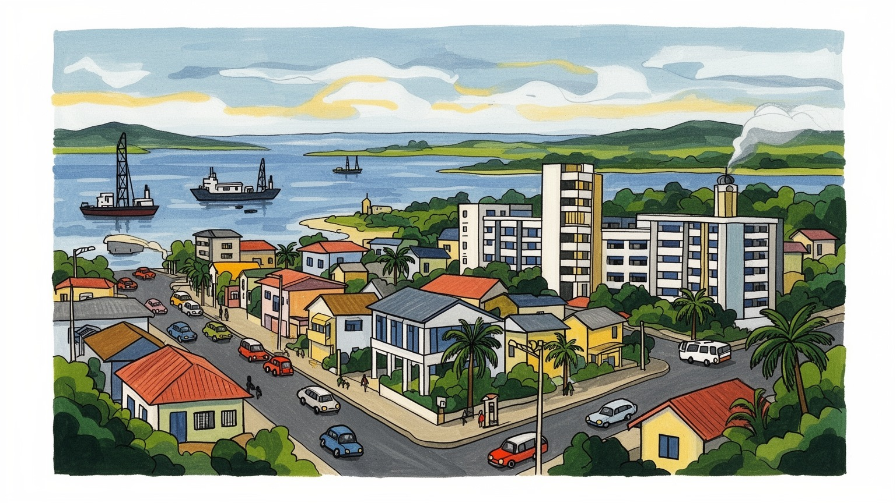
リーブルヴィルは中部アフリカの大西洋岸で、石油、森林、港湾、外交をまとめる首都です。旧フランス圏の制度、地域安全保障、ギニア湾の海上交通、政変後の国家再編が、河口の官庁街へ集まります。政治の近さを見ます。
雇用は行政、港湾、石油関連、木材、建設、小売、交通、サービス業に広がります。高い国民所得の数字の背後で、非公式労働、若者の失業、住宅費、輸入物価が家計を圧迫します。都市の富には重い偏りもあります。
フランス語、ファンやミエネ系の記憶、教会、モスク、音楽、市場の食、海辺の散歩が重なります。奴隷解放の地名、植民地行政、独立後の首都文化が、今日の若い都市生活と交わります。信仰も日々強く街を支えます。
旅行者は海岸通り、市場、サントマリー聖堂、国立博物館、ポワントドニへ向かいます。住民は通勤渋滞、雨季の排水、物価、雇用、治安、住宅、停電と向き合いながら、海と森の近い首都で暮らします。日常も旅も濃いです。
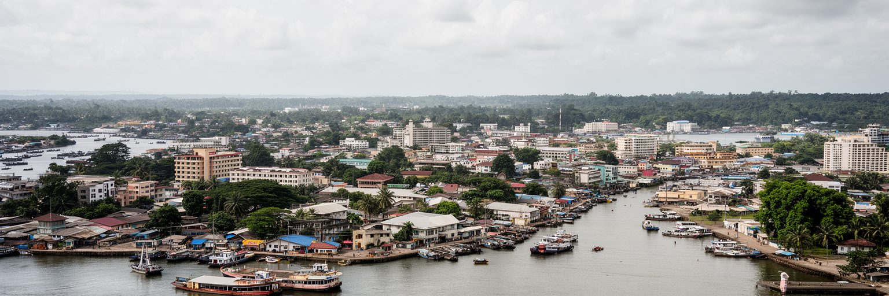
リーブルヴィルは、ガボン河口の北岸に伸びる首都です。市街地は海岸道路、官庁街、丘陵の住宅地、空港、港湾機能をつなぎ、内陸の広い森林国家を大西洋へ開きます。都市の名前は解放奴隷の入植地に由来し、自由の物語を掲げながら、フランス植民地行政と独立国家の制度を重ねてきました。今日の中心部では、大統領府、官庁、銀行、ホテル、教会、モスク、市場、海辺の遊歩空間が近接します。人口と経済活動が首都圏へ集中するため、地方の資源と国家予算の使い方は、リーブルヴィルの道路、住宅、学校、病院、港に強く反映されます。河口に面する位置は港と外交には有利ですが、湿地、低地、豪雨、海岸浸食、交通混雑も抱えます。都市を読むには、海を眺める首都の明るさだけでなく、内陸の森林、鉱物、石油、地方都市から集まる人々の期待を見なければなりません。リーブルヴィルは、ガボンという国家が外部世界へ話す声であり、同時に国内の不均衡が最も目に見える場所です。公共投資が集まりやすい首都だからこそ、地方との関係をどう保つかが政治的な課題になります。河口の景観は、開放性と集中の両方を示しています。さらに河口は外洋の風と雨を受ける環境でもあり、都市の形は水辺の安全、排水、護岸、公共空間の設計に左右されます。首都の第一印象は海の広がりですが、その足元では土地の限界と行政の判断が常に問われています。
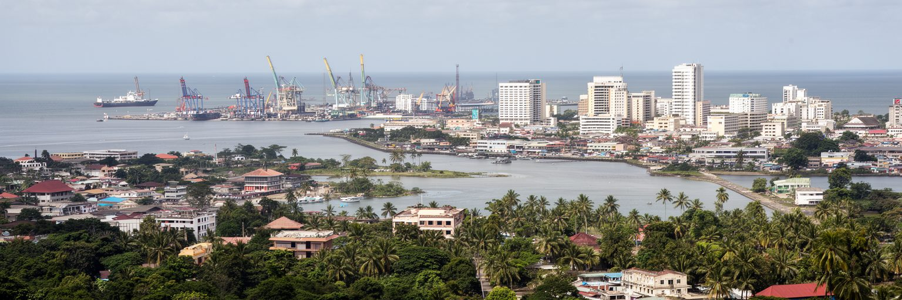
ガボンは石油収入によって、周辺諸国より高い一人当たり所得を長く示してきました。しかしその富は均等に広がったわけではなく、リーブルヴィルには政治権力、公共事業、輸入消費、雇用期待、格差への不満が同時に集まります。石油は海上や沿岸の産業ですが、税収、契約、規制、外資交渉、公共投資の判断は首都で行われます。独立後の長期政権、フランスとの結びつき、2023年の軍による政変、その後の制度移行は、都市の政治空間を緊張させてきました。官庁街や大通りは国家の安定を演出しますが、若者の失業、住宅不足、公共サービスの不足、汚職への疑念は市民の会話から消えません。資源国の首都では、景気の波と国際価格が雇用、建設、輸入品、為替、国家財政へ直結します。石油に頼りすぎる経済から、木材加工、物流、農業、観光、デジタル、地域サービスへどう広げるかが、リーブルヴィルの課題です。政治の変化が本当に生活を変えるかは、選挙や憲法だけでなく、道路が直り、学校が機能し、雇用が開かれ、行政手続きが透明になるかで判断されます。海辺の首都は、資源収入を公共の信頼へ変えられるかを試されています。市民にとって政治は遠い制度ではなく、採用、許認可、警察、公共料金、学校、診療の経験として現れます。そのため改革の言葉は、窓口の公平さや近所の道路の変化で具体性を持ちます。
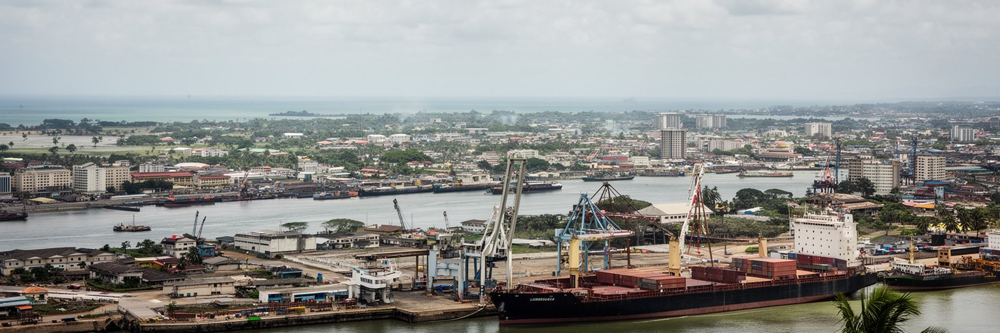
リーブルヴィルの都市圏を支える実務の中心に、南東側のオウェンド港と鉄道があります。港はコンテナ、燃料、食料、建材、自動車、木材、鉱物、日用品を受け入れ、内陸の森林や鉱山、地方都市と大西洋市場を結びます。トランスガボン鉄道は、首都圏と内陸を結ぶ骨格で、木材やマンガンなどの貨物だけでなく、人と地域経済のつながりも運びます。都市の店頭価格は、港湾の効率、道路の混雑、税関、燃料費、輸入為替に左右されます。港で働く荷役、通関、運転手、整備、警備、倉庫、事務の仕事は、観光の表舞台には出にくいですが、首都生活を支える基盤です。港の拡張や工業地区の整備は雇用を生みますが、河口の水質、沿岸の住宅、交通事故、騒音、土地利用との調整も必要になります。リーブルヴィルを行政都市としてだけ見ると、物流の都市性を見落とします。内陸で伐られた木材、鉱山から出た貨物、海外から届く米や医薬品は、港のゲートを通って家庭へ入ります。港湾政策は国家経済にとどまらず、住民が毎日買う食品と建材の価格を決める重要な生活政策です。港と鉄道の信頼性が落ちれば、地方の生産者も首都の消費者も同時に影響を受けます。道路にあふれる大型車、倉庫用地の不足、港湾労働の安全は、地味でも都市の成熟度を測る指標です。物流の遅れは、病院の薬や学校の教材にも及びます。
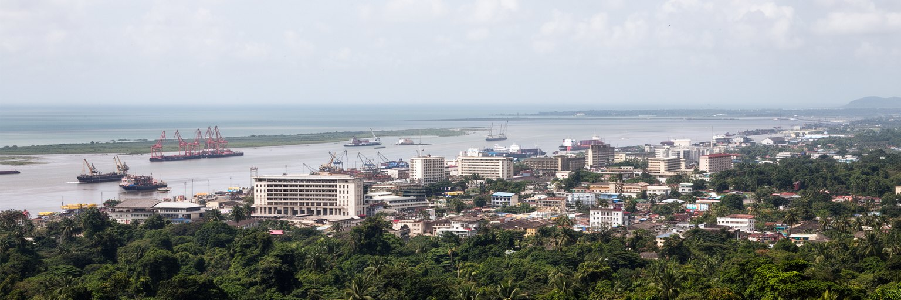
ガボンは国土の大部分を森林が覆う国で、リーブルヴィルはその森林国家の玄関です。木材、国立公園、炭素吸収、野生生物保護、先住的な知識、地方の生活、外資による伐採や加工は、首都の政策と市場を通じて世界へつながります。海岸にいると森林は遠く感じられますが、家具、建材、輸出貨物、環境外交、観光宣伝、気候資金の議論はリーブルヴィルで具体化します。森林保全は単に木を残す話ではありません。地方住民の権利、道路建設、違法伐採、雇用、国立公園の管理、野生動物との摩擦、炭素市場の公平性を同時に扱います。首都の消費が増えれば、建材、燃料、食料、土地需要は内陸へ影響します。逆に森林を守る政策が成功すれば、リーブルヴィルは石油だけに頼らない国際的な存在感を得ます。都市の役割は、森を観光ポスターの背景にすることではなく、森林から得る収入と保全の責任を住民に説明できる制度を作ることです。熱帯雨林の国の首都として、リーブルヴィルは緑を誇るだけでなく、港、銀行、行政、教育を通じて森の価値を長期の公共利益へ変える必要があります。森の未来は、海辺の官庁と市場にもかかっています。木材加工を国内で高める政策も、雇用を増やす可能性と資源管理の難しさを併せ持ちます。首都の消費者が森の出どころを意識できるかも、保全を日常化する鍵になります。
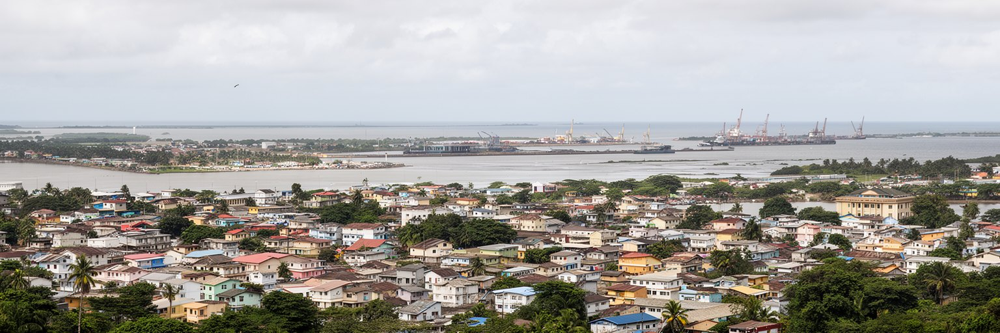
リーブルヴィルの暮らしは、海岸道路の華やかな景色と、丘陵や周辺地区へ広がる住宅地の現実を併せ持ちます。首都への人口集中は続き、官庁、企業、学校、病院、港、空港に近い場所ほど土地と家賃は高くなります。整備された地区の隣に、排水、道路、電気、水道、廃棄物処理が十分でない居住地が広がることもあります。雨季の豪雨は低地や未舗装道路を傷め、通勤、通学、救急、商売を難しくします。車への依存が強い都市では、渋滞と燃料費が家計と時間を奪い、歩行者や乗り合い交通の安全も課題になります。高所得国の指標を持つガボンでも、都市の生活費は重く、輸入食品、家賃、交通、教育費は若い世帯を圧迫します。住宅問題は建物の数だけでなく、雇用、土地権利、公共交通、雨水排水、学校配置と結びついています。海辺の再開発が進むほど、誰がよい場所に住み、誰が遠い周辺へ押し出されるかが問われます。リーブルヴィルを歩くと、首都の発展が生活の安定へ直結していないことも分かります。都市の豊かさは、海岸の美しさではなく、住民が雨の日にも安全に移動し、無理なく住み続けられる条件に表れます。新しい道路や海辺の整備が進む時も、バス停、歩道、排水路、学校までの距離を見なければ生活改善は測れません。住宅は都市の外観ではなく、家族の健康と学習時間を決める基盤です。
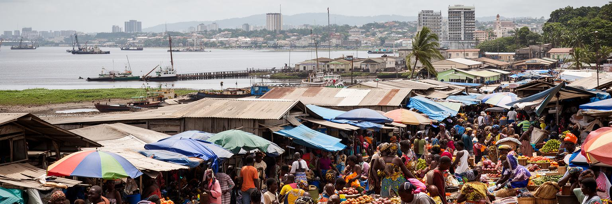
リーブルヴィルの市場は、海、森林、内陸農村、輸入物流が交差する場所です。魚、キャッサバ、バナナ、野菜、燻製、香辛料、輸入米、冷凍食品、携帯品、衣料、修理品が並び、売り手と買い手の会話が都市の物価を映します。ガボンは石油で外貨を得てきましたが、日々の食卓は港湾物流、地方からの道路、近海漁業、近隣国からの商流に強く依存します。市場の価格が上がれば、賃金が伸びない家庭ほどすぐ影響を受けます。女性商人、若い運搬人、タクシー、露店、飲食店は、都市の非公式経済を支える重要な働き手です。市場は単なる買い物の場ではなく、民族、言語、宗教、出身地、移民の関係が混ざる公共空間でもあります。衛生、日陰、排水、トイレ、廃棄物、冷蔵、火災対策が整わなければ、働く人の健康と食品の安全は守れません。観光客にとって市場は色彩豊かな場所ですが、住民にとっては家計と栄養と近所づきあいの中心です。都市政策が大型商業施設だけを優先すれば、小商人の生活基盤が弱まります。リーブルヴィルの食を読むことは、石油国家の数字の背後にある、毎日の交渉と労働を見ることです。市場の声は、首都経済の最も敏感な指標です。朝の仕入れ、雨を避ける屋根、氷の確保、帰宅時の交通まで含めて、市場は都市インフラの総合試験場でもあります。食の安心は、都市への信頼にもつながります。
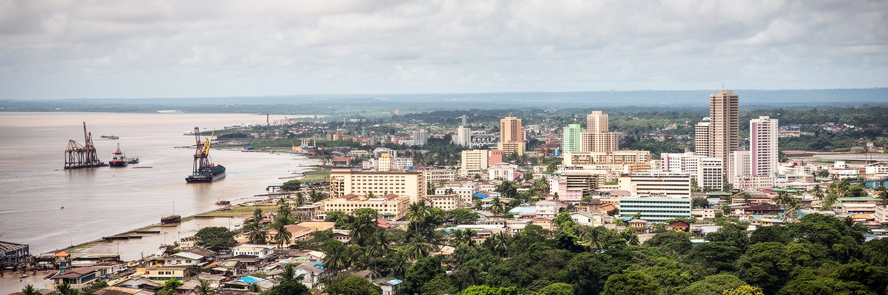
リーブルヴィルの文化は、ガボン各地の人々、沿岸のミエネ系の歴史、ファンをはじめとする内陸の社会、フランス語圏の教育、近隣諸国からの移住、音楽、教会、モスクが重なって形作られます。キリスト教は礼拝、葬儀、結婚、学校、慈善活動を通じて生活暦に深く入り、イスラム教徒の商人や移民共同体も都市の食と商業を支えます。フランス語は行政と学校の共通語ですが、家庭や市場では複数の言語とアクセントが聞こえます。地名に残る解放奴隷の記憶、植民地時代の建築、独立後の政治文化は、若者の音楽やファッション、SNSの表現とも交わります。都市の文化を観光用の舞台だけで見ると、家族、宗教、近所、出身地方のネットワークを見落とします。人々は教会の合唱、モスクの祈り、市場の食事、海辺の散歩、サッカー、婚礼、葬儀を通じて、首都の生活に秩序と楽しみを作ります。一方で、民族や出身地、階層、移民身分の違いは、仕事や住まいの機会にも影響します。多文化性は自然に調和するものではなく、学校、公共空間、法制度、日々の商取引の中で調整されます。リーブルヴィルの魅力は、その調整が港町の開放性と家族的な近さの中で続く点にあります。祝祭や音楽の場は、若者が政治や社会への思いを表す回路にもなります。文化は余暇ではなく、都市で共に暮らす作法を育てる力です。
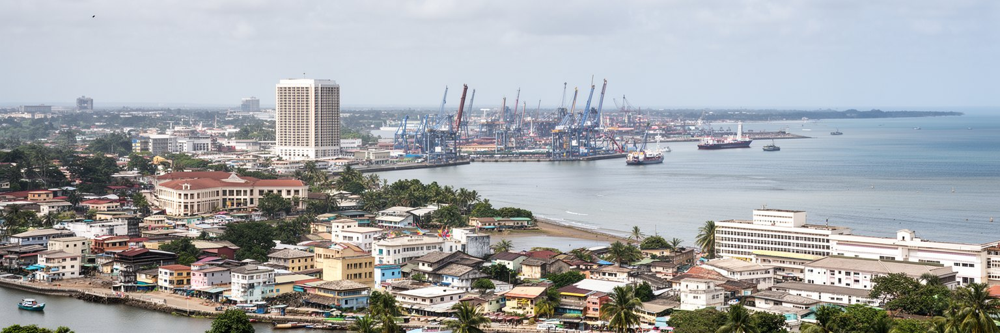
リーブルヴィルの観光は、都市散策と海辺の余暇が組み合わさります。海岸通り、サントマリー大聖堂、国立博物館、工芸品の店、市場、レストラン、ホテル、夜の音楽空間を歩き、フェリーやボートでポワントドニの砂浜や河口の自然へ向かう流れがあります。首都はロアンゴ国立公園や内陸の自然観光へ向かう玄関でもあり、ガボンの森林と野生動物のイメージを最初に受け止めます。観光の可能性は大きいですが、道路、案内、治安、価格の透明性、ビザや空港手続き、環境管理、公共空間の維持が整わなければ、滞在の満足度は上がりません。旅行者に見える海岸の美しさと、住民が使える海辺の広場や歩道が両立することも重要です。都市観光が一部のホテルや送迎業だけに閉じると、市場の商人、若いガイド、音楽家、職人、飲食店へ利益が広がりません。リーブルヴィルらしい旅は、派手なリゾートだけではなく、奴隷解放の地名、植民地と独立の記憶、宗教施設、港湾、森林国家の玄関という層を読む時間です。訪問者が写真を向ける先、地元の人への声のかけ方、海岸を汚さない姿勢も、都市への敬意を示します。観光は首都の生活を借りる行為でもあります。案内表示や小さな博物館の説明が充実すれば、短い滞在でも都市の歴史を深く理解できます。観光の質は、派手さよりも誠実な案内と安全な移動で高まります。
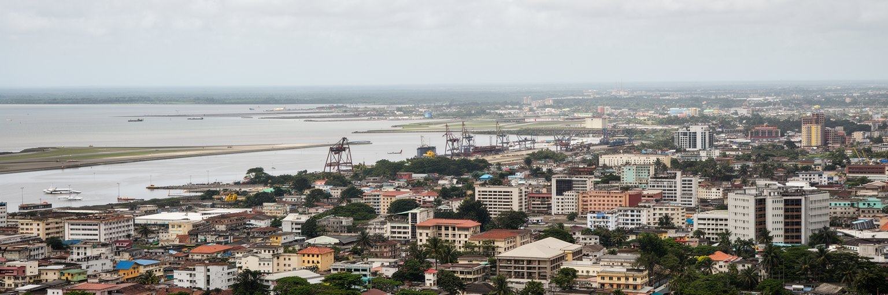
レオン・ムバ国際空港は、リーブルヴィルを中部アフリカ、欧州、西アフリカ、湾岸諸国へ結ぶ玄関です。空港から海岸沿いに市街地へ入る短い移動には、ホテル、外交施設、企業事務所、住宅、海辺のレストラン、交通渋滞が連続します。空港は観光客や出張者の入口にとどまらず、医療搬送、留学、出稼ぎ、政府代表団、援助関係者、部品や高価な貨物の通路でもあります。便数や航空運賃は、外資企業の活動、国際会議、家族訪問、学生の移動に影響します。空港周辺の整備は国の顔を作りますが、土地利用、騒音、道路混雑、警備、タクシー料金の透明性も問われます。国際空港を持つ首都は外へ開かれて見えますが、実際には多くの住民が高い航空券を簡単には買えません。移動の自由には階層差があります。空港回廊を読むと、リーブルヴィルが世界と接続する一方で、その接続が誰に開かれているのかが見えてきます。港が生活物資を運ぶなら、空港は人材、情報、緊急医療、外交の速度を運びます。首都の競争力は、滑走路の長さだけでなく、空港から市内までの安全な移動、公共交通、案内、入国手続き、都市の信頼感によって決まります。到着時の印象は、国への信頼を左右する小さな行政でもあります。空港で働く清掃、警備、地上職、運転手の接客も、都市の表情を作る重要な労働です。移動の結節点ほど、公共性が問われます。
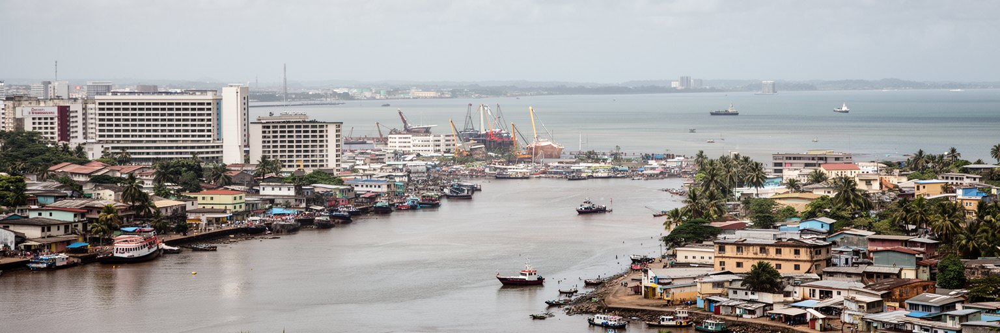
リーブルヴィルの若者は、首都に集中する教育、仕事、文化、政治情報へ近い一方で、就職難、生活費、住宅、交通、家族への扶養責任に直面します。ガボンは石油に支えられた比較的高い所得指標を持ちますが、それは若い世代の安定雇用を自動的に意味しません。公務、石油関連、港湾、銀行、通信、建設、商業、運転、警備、飲食、非公式販売の間で、多くの人が資格と人脈を探します。大学や職業訓練が労働市場と結びつかなければ、学歴への期待は不満へ変わります。政治変動の時期には、若者は改革への希望を持つ一方、治安や表現の自由、雇用の現実を慎重に見ています。格差は住宅地の位置、学校の質、通勤手段、インターネット、医療、親族の支援にも表れます。首都の街路には新しい店や車が増えても、雨季に通えない道や不安定な仕事は残ります。若者が都市を信頼できるかは、採用の透明性、起業の支援、公共交通、文化活動、スポーツ施設、女性の安全、行政サービスの使いやすさにかかっています。リーブルヴィルの将来は、資源収入を若い世代の技能と公共参加へ変えられるかにあります。街の活気は、雇用の質と公平さなしには長く続きません。音楽、スポーツ、デジタル制作、小さな商売は、若者が自分の場所を作る手段でもあります。それを制度が支えられるかが、首都の社会的な厚みを決めます。
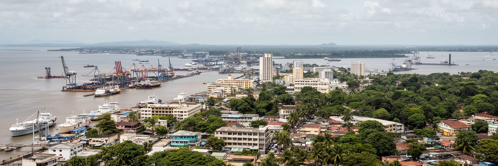
リーブルヴィルは、人口や経済規模だけで評価しにくい首都です。ガボン河口に面した市街地には、石油国家の政治、森林保全の外交、港湾物流、旧フランス圏の制度、解放奴隷の記憶、教会とモスク、市場の食、海辺の余暇、住宅不足、若者の不安が同居します。高所得に見える国の数字と、排水の悪い道路、非公式労働、輸入物価、周辺地区の住宅事情は同じ都市の中にあります。海岸通りを歩くと、国家の顔として整えられた景観が見えますが、その背後には内陸の森林、地方の資源、港で働く人、学校へ通う若者、家計を支える市場の商人がいます。リーブルヴィルを読むことは、資源国の首都がどのように富を配分し、政治的な信頼を作り、自然資本を守り、日常生活を支えるかを見ることです。都市の魅力は、河口の明るい光や海辺の開放感だけではありません。集中する権力と不均衡、文化の混合、森林と大西洋を結ぶ位置、変化を求める市民の声が重なっている点にあります。ガボンの未来を考える時、リーブルヴィルは単なる首都名ではなく、国家の約束が暮らしの形で試される場所です。港の混雑、空港の印象、市場の価格、若者の仕事、雨季の道路は別々の話に見えて、同じ統治の質を映します。この連なりを見れば、都市の重要性は規模ではなく責任の集中から生まれることが分かります。だからこそ、小さな改善も首都全体の信頼に響きます。